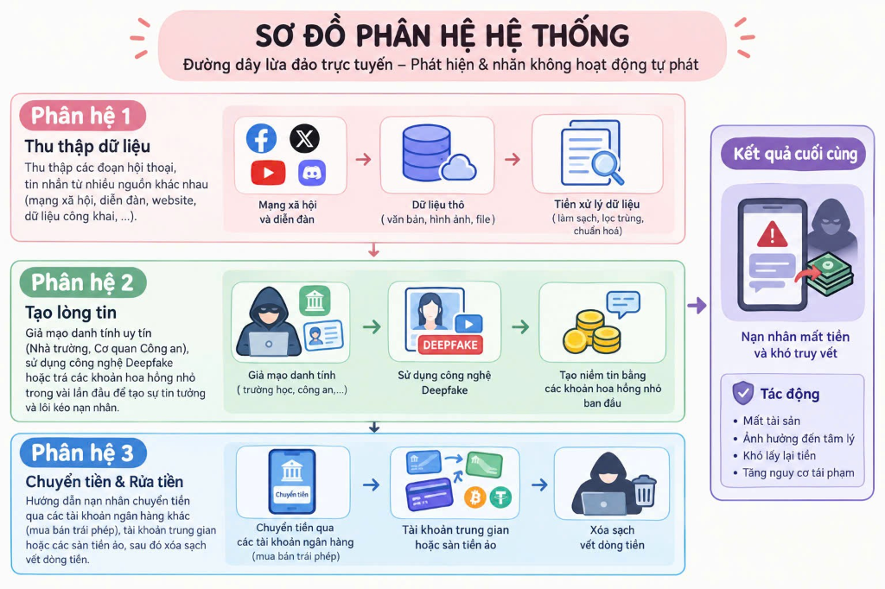
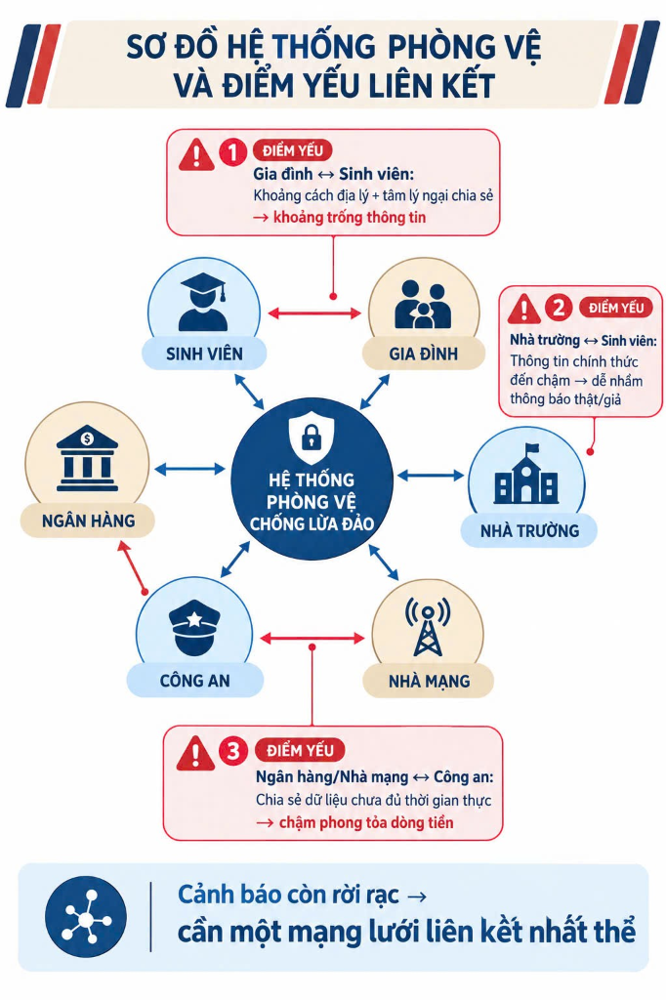
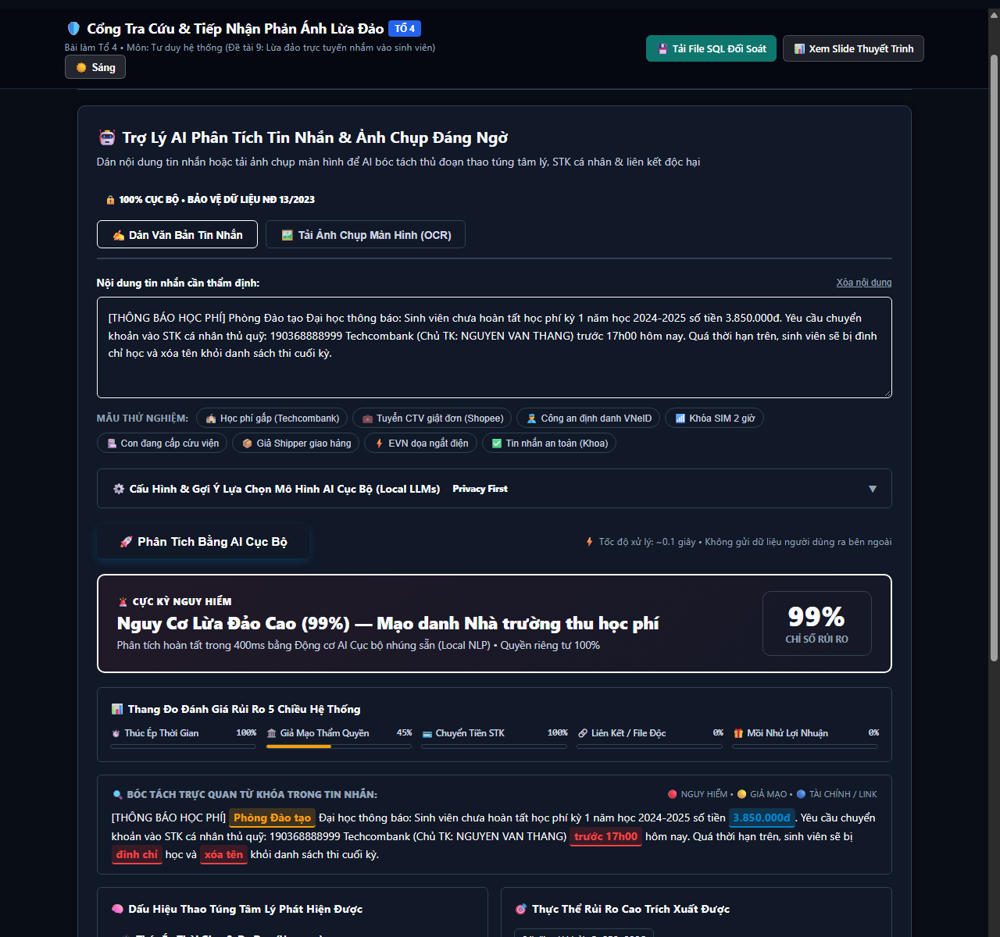
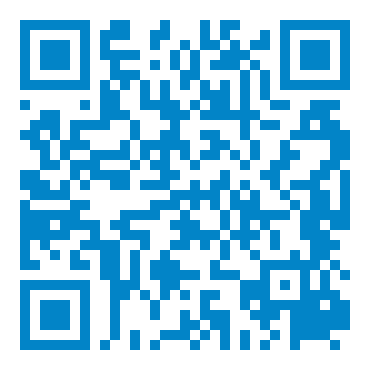

LỪA ĐẢO TRỰC TUYẾN
NHẮM VÀO SINH VIÊN
Bóc tách mạng lưới lừa đảo, chỉ ra điểm gãy liên kết phòng vệ và giải pháp Cổng tra cứu & tiếp nhận phản ánh
- Chào Thầy Cô và các bạn. Giới thiệu đề tài 9 dưới góc độ môn Tư duy hệ thống.
- Tiếp cận khoa học bóc tách cấu trúc hệ thống của đường dây tội phạm và tìm ra nguyên nhân gốc rễ vì sao các bên cảnh báo riêng rẽ lại thất bại.
Thực Trạng: Sinh Viên & Giới Trẻ Trong Tầm Ngắm Tội Phạm Mạng
Dữ liệu tổng hợp từ Báo cáo GASA-Chongluadao (2023), Cục An toàn thông tin Bộ TT&TT, Hiệp hội An ninh mạng Quốc gia (NCA)

Theo báo cáo của Hiệp hội An ninh mạng Quốc gia (NCA, tháng 12/2024): cứ 220 người dùng smartphone thì 1 người trở thành nạn nhân. Sinh viên và học sinh được xác định là nhóm "mục tiêu mềm" hàng đầu do thiếu kinh nghiệm sống và dễ bị thao túng tâm lý.
Theo Báo cáo "State of Scams in Vietnam 2023" của GASA phối hợp Chongluadao.vn: Facebook và Gmail là kênh lừa đảo số 1 (71%), tiếp theo là Telegram (28%). Đây là dữ liệu khảo sát thực tế trên người dùng Việt Nam.
Cục An toàn thông tin (Bộ TT&TT) ghi nhận hơn 22.200 phản ánh qua Cổng cảnh báo an toàn thông tin Việt Nam. Hơn 80% vụ liên quan chiếm đoạt tài sản, khoảng 70% xuất phát từ mạng xã hội Zalo và Facebook.
- Dẫn chứng số liệu thực tế được kiểm chứng: 50% nạn nhân lừa đảo tài chính là sinh viên/thanh niên dưới 22 tuổi.
- Báo cáo GASA & Chongluadao: 70% người dùng gặp bẫy lừa hàng tháng, chủ yếu qua Facebook/Gmail.
- Bóc tách nguyên nhân hệ thống: Tân sinh viên bước từ hệ thống kín (gia đình) sang hệ thống mở, bị hổng liên kết bảo vệ.
Hình Ảnh Thực Tế: Tin Nhắn Mạo Danh Thu Học Phí
Thủ đoạn mạo danh Phòng Đào tạo hối thúc chuyển tiền vào STK cá nhân kèm đe dọa kỷ luật

Lấy danh nghĩa "Phòng Đào tạo" gửi tin nhắn thông báo thiếu 3.250.000đ học phí.
Yêu cầu nộp "trước 17h hôm nay" nếu không sẽ bị đình chỉ và xóa tên khỏi danh sách thi.
Yêu cầu chuyển khoản Techcombank của kẻ lừa đảo thay vì cổng Portal thanh toán chuẩn của trường.
- Bằng chứng tin nhắn SMS mạo danh thu học phí thực tế tại Việt Nam.
- Tân sinh viên sợ bị đình chỉ học nên bị cuốn vào bẫy tâm lý và chuyển tiền ngay.
Hình Ảnh Thực Tế: Bẫy "Việc Nhẹ Lương Cao" Tuyển CTV
Dẫn dụ làm nhiệm vụ xem video TikTok, giật đơn hàng Shopee nhận hoa hồng 300k - 500k/ngày

Hứa hẹn thu nhập 300k - 500k/ngày nhận tiền ngay vào tài khoản, không cần kinh nghiệm.
Cho nạn nhân nhận 50k thật ở 1-2 nhiệm vụ đầu tiên để loại bỏ tâm lý hoài nghi.
Nâng vốn lên hàng triệu đồng làm nhiệm vụ giật đơn rồi khóa rút tiền, yêu cầu nộp thêm tiền giải cứu.
- Phân tích bẫy việc làm Shopee/TikTok: Kẻ lừa đảo thả mồi nhỏ ban đầu rồi nuốt trọn số tiền lớn sau đó.
Sơ Đồ Phân Hệ Hệ Thống: Đường Dây Lừa Đảo Trực Tuyến
Phát hiện & nhận diện đường dây lừa đảo hoạt động có tổ chức chặt chẽ — Không hoạt động tự phát

Thu thập các đoạn hội thoại, tin nhắn từ nhiều nguồn (Facebook, Telegram, diễn đàn SV, dữ liệu rò rỉ). Làm sạch, lọc trùng và chuẩn hóa danh sách sinh viên tiềm năng.
Giả mạo danh tính uy tín (Nhà trường, Cơ quan Công an), sử dụng công nghệ Deepfake hoặc trả các khoản hoa hồng nhỏ (50k - 100k) trong vài lần đầu để tạo niềm tin tuyệt đối.
Hướng dẫn nạn nhân chuyển tiền qua tài khoản ngân hàng mua bán trái phép (mule), tài khoản trung gian hoặc các sàn tiền ảo (P2P), sau đó xóa sạch hoàn toàn dấu vết dòng tiền.
Nạn nhân mất tiền và khó truy vết. 4 Tác động cốt lõi: ① Mất tài sản • ② Ảnh hưởng tâm lý nặng nề • ③ Khó lấy lại tiền • ④ Tăng nguy cơ tái phạm.
- Bóc tách đường dây thành 3 phân hệ theo tư duy hệ thống: Thu thập dữ liệu, Tạo lòng tin, Chuyển tiền & Rửa tiền.
- Dẫn chứng đường dây vận hành chuyên nghiệp, có tổ chức chặt chẽ chứ không hoạt động tự phát.
Tính Thích Nghi & Vòng Phản Hồi (Feedback Loop)
Hệ thống lừa đảo liên tục điều chỉnh hành vi khi nhận tín hiệu siết chặt từ xã hội
📅 Theo Mùa Vụ
Tháng 9: Đánh vào bẫy học phí, ký túc xá, tìm phòng trọ.
Tháng 12 - Tết: Đánh vào việc làm thời vụ, vé xe khách giá rẻ.
📲 Theo Công Nghệ
Nhà mạng siết SMS rác ➔ Chuyển sang lập group Telegram tự hủy.
Nạn nhân cảnh giác ➔ Dùng email giả mạo hoặc cuộc gọi giả danh.
⚖️ Theo Luật Pháp
Ngân hàng bắt buộc quét khuôn mặt trên 10 triệu (QĐ 2345) ➔ Lập tức chia nhỏ các lệnh chuyển tiền thành 9.5 triệu đồng.
- Cơ chế phản hồi (Feedback loop): thích nghi theo mùa, theo công nghệ và lách luật.
- Chuyển giao phần trình bày cho Thành viên 2 sang Nhiệm vụ 2 & 3.
Hệ Thống Phòng Vệ Đa Tác Nhân: Mục Tiêu & 6 Phân Hệ Phòng Thủ
Mạng lưới phòng thủ xã hội liên kết đa tầng bảo vệ sinh viên trước tội phạm mạng
🎓 SINH VIÊN
Chủ thể trực tiếp tiếp nhận thông tin, là cảm biến đầu cuối và đưa ra quyết định chuyển tiền.
👨👩👦 GIA ĐÌNH
Hậu phương chu cấp tài chính và là chốt chặn tâm lý giúp giải tỏa áp lực đe dọa.
🏛️ NHÀ TRƯỜNG
Ban hành quy chế học phí, quản lý sinh viên và duy trì các kênh thông báo chính thức.
💳 NGÂN HÀNG
Cổng kiểm soát dòng tiền, xác thực tài khoản và thực thi lệnh phong tỏa khẩn cấp.
📶 NHÀ MẠNG
Hạ tầng viễn thông, quản lý SIM chính chủ và ngăn chặn cuộc gọi, tin nhắn rác.
🛡️ CÔNG AN
Thực thi pháp luật, tiếp nhận tin báo, điều tra bóc gỡ đường dây và cưỡng chế phong tỏa.
- Giới thiệu mục tiêu của hệ thống phòng vệ và 6 phân hệ trụ cột.
- Tại sao có đủ 6 bên nhưng tội phạm vẫn chọc thủng được? Câu trả lời nằm ở khái niệm Liên kết và Điểm gãy tương tác.
Sơ Đồ Hệ Thống Phòng Vệ & 3 Điểm Yếu Liên Kết
Sức mạnh hệ thống không phụ thuộc số lượng phân hệ, mà quyết định bởi độ bền vững và vận tốc tương tác giữa các liên kết

Khoảng cách địa lý + tâm lý ngại chia sẻ ➔ Khoảng trống thông tin. Sinh viên sợ bố mẹ la mắng, muốn tự lập. Kẻ lừa đảo cô lập nạn nhân bằng câu dặn "Bí mật nghiệp vụ, cấm kể cho gia đình".
Thông tin chính thức đến chậm ➔ Dễ nhầm thông báo thật / giả. Kênh đào tạo 1 chiều, thiếu đường dây nóng xác minh STK 24/7. Nhận tin nhắn dọa xóa tên lúc 11h đêm sinh viên không biết hỏi ai.
Chia sẻ dữ liệu chưa đủ thời gian thực ➔ Chậm phong tỏa dòng tiền. Dòng tiền tội phạm bốc hơi trong 3-5 phút, nhưng quy trình công văn hành chính xác minh phong tỏa tài khoản mất 24h đến vài ngày.
- Bóc tách 3 điểm yếu liên kết trọng yếu dựa trên sơ đồ phòng vệ: Sinh viên - Gia đình, Sinh viên - Nhà trường, và Ngân hàng/Nhà mạng - Công an.
- Chốt thông điệp: Các nỗ lực đơn lẻ sẽ bị bẻ gãy nếu thiếu một mạng lưới liên kết nhất thể.
Nguyên Lý Tính Nhất Thể: Vì Sao Cảnh Báo Rời Rạc Đều Thất Bại?
Thuộc tính mới nổi (Emergent Properties), Ốc đảo dữ liệu (Data Silos) và Công thức hiệp đồng 1 + 1 > 2
"Một hệ thống là một chỉnh thể hữu cơ, trong đó các thuộc tính tổng thể (Emergent Properties) không thể suy ra bằng cách cộng gộp số học các phần tử riêng rẽ."
Năng lực tự bảo vệ xã hội chỉ xuất hiện khi các phân hệ chia sẻ luồng thông tin hai chiều đồng bộ (Closed-loop Feedback). Khi phân rã, thuộc tính phòng vệ này biến mất hoàn toàn.
Mỗi phân hệ vận hành độc lập: Ngân hàng thấy chuyển tiền, Nhà mạng thấy cuộc gọi, Trường thấy thông báo nộp học phí. Không bên nào nắm trọn bức tranh toàn cảnh.
Tội phạm mạng không bao giờ tấn công trực tiếp vào tường lửa của ngân hàng hay trường học; chúng khai thác chính ranh giới chuyển tiếp thiếu kiểm soát giữa các phân hệ.
Quá nhiều thông báo chung chung không đúng lúc khiến sinh viên nảy sinh tâm lý trơ phản ứng (Habituation), sinh viên bấm "Bỏ qua" khi đối mặt với bẫy lừa thật.
- Vận dụng khái niệm Tính nhất thể (Wholeness). Giải thích vì sao nỗ lực đơn lẻ triệt tiêu lẫn nhau.
- Chuyển giao phần trình bày cho Thành viên 3 sang Giải pháp Cổng tra cứu & tiếp nhận.
Cơ Đồ Tư Duy: Mạng Lưới Phòng Vệ & Tác Nhân Liên Kết
Tổng hợp toàn diện mối quan hệ giữa Hệ thống tội phạm đối kháng và Hệ thống phòng vệ đa tầng
• Săn tìm mục tiêu: Quét dữ liệu tân SV từ group trường, mạng xã hội, rải mồi đa kênh.
• Thao túng tâm lý: Thả mồi nhỏ 50k, tạo áp lực thời gian gấp, cô lập nạn nhân.
• Tẩu tán tài sản: Tài khoản rác (mule), chia nhỏ <10tr né sinh trắc học, rửa qua crypto trong 3 phút.
• Mùa vụ: Tháng 9 đánh học phí/ký túc xá; Tết đánh việc làm thêm/vé xe.
• Công nghệ & Luật: Siết SMS chuyển sang Telegram/VoIP; siết sinh trắc học chuyển sang chia nhỏ dòng tiền.
Phá vỡ ốc đảo dữ liệu (Data Silos) & Quá tải cảnh báo • Hiệu quả phòng thủ toàn hệ thống: 1 + 1 > 2
• Tra cứu đa nguồn: Đối soát SĐT, email mạo danh trường học chuẩn xác 100%.
• Tiếp nhận hồ sơ: Cấp Ticket ID, cảnh báo chéo tức thì cho cộng đồng sinh viên.
• Quyền riêng tư: Tuân thủ nghiêm ngặt Nghị định 13/2023/NĐ-CP.
• Cắt kết nối/gỡ app độc: Ngăn chặn chiếm đoạt từ xa.
• Khóa ngân hàng khẩn cấp: Phong tỏa thẻ & tài khoản trong 15 phút.
• Báo Công an & 156: Bảo toàn chứng cứ số, trình báo điều tra.
- Giới thiệu Sơ đồ tư duy toàn cảnh: Khái quát hóa trọn vẹn 4 trụ cột kiến thức của đề tài.
- Kết nối từ phân hệ đối kháng (Cột 1) qua điểm gãy hệ thống (Cột 2) đến giải pháp Cổng tra cứu và Quy trình ứng phó giờ vàng (Cột 3).
- Chuyển giao phần trình bày cho Thành viên 3 sang chi tiết giải pháp kỹ thuật.
Giải Pháp Cổng Tra Cứu & Tiếp Nhận Tổ 4: Khôi Phục Tính Nhất Thể
Mục tiêu tối thượng, 4 phân hệ cốt lõi và cơ chế khép kín vòng phản hồi bảo vệ tân sinh viên
1. Tiền Kiểm Đa Nguồn
Tra cứu nhanh SĐT lừa đảo, đối chiếu domain chuẩn .edu.vn và kiểm tra STK cá nhân mạo danh tài khoản thu học phí nhà trường.
2. Trợ Lý AI Bóc Tách (Local AI)
Phân tích ngữ nghĩa tin nhắn đe dọa/học phí/việc làm và nhận diện dấu hiệu giả mạo văn bản trường, bảo mật dữ liệu tuyệt đối (Offline).
3. CSDL SQL & Cấp Ticket ID
Tiếp nhận chứng cứ, tự động cấp mã Ticket ID, đồng bộ vào CSDL SQL scam_phone_database.sql để chia sẻ cảnh báo chéo (1 + 1 > 2).
4. Điều Phối "Giờ Vàng" 15-30'
Kịch bản 6 bước hành động tức thời: ngắt kết nối mạng, phong tỏa thẻ ngân hàng, bảo toàn chứng cứ số và trình báo Công an/156.
- Giới thiệu giải pháp Cổng Tra cứu & Tiếp nhận phản ánh Tổ 4 theo tư duy hệ thống.
- Làm rõ Mục tiêu hệ thống và 4 Phân hệ phối hợp giải quyết triệt để 4 điểm gãy liên kết đã phân tích ở Slide 8.
Yêu Cầu Chức Năng (FR) & Phi Chức Năng (NFR)
Chuẩn hóa kiến trúc giải pháp công nghệ đáp ứng toàn diện các tiêu chí kỹ thuật và pháp lý
⚙️ Yêu Cầu Chức Năng (Functional Requirements)
.edu.vn và đối soát tài khoản học phí.TK-2026-XXXX), lưu vết thời gian và phân loại mức độ rủi ro.scam_phone_database.sql, hỗ trợ truy vấn và trích xuất dữ liệu đối soát minh bạch.🔒 Yêu Cầu Phi Chức Năng (Non-Functional Requirements)
- Bóc tách chi tiết 5 Yêu cầu Chức năng (FR1-FR5) và 5 Yêu cầu Phi chức năng (NFR1-NFR5).
- Nhấn mạnh cam kết quyền riêng tư (Privacy-by-design) tuân thủ nghiêm ngặt Nghị định 13/2023/NĐ-CP và tốc độ xử lý dưới 50ms.
Ma Trận Đánh Giá Rủi Ro Hệ Thống & Giải Pháp Kiểm Soát
Nhận diện các phản ứng phụ phi tuyến tính và giải pháp công nghệ - xã hội kiểm soát rủi ro triệt để
Sinh viên phụ thuộc 100% vào app, mất cảnh giác tự nhiên trước thủ đoạn biến tướng chưa có trong mẫu.
Gắn cờ nhầm email hoặc SMS nhắc đóng học phí thật của trường, gây hoang mang và chậm trễ tiến độ nộp phí.
Đối tượng lừa đảo liên tục đổi số SIP, biến tướng câu từ để qua mặt bộ lọc từ khóa đơn giản.
Người dùng vô ý hoặc cố tình báo cáo số của người khác để chơi xấu, gây nhiễu loạn CSDL cộng đồng.
Rủi ro rò rỉ hình ảnh sao kê, tên tuổi sinh viên khi tải ảnh chứng cứ lên hệ thống tiếp nhận.
- Đánh giá toàn diện Ma trận 5 Rủi ro hệ thống (ỷ lại công nghệ, báo động sai, tấn công đối kháng, đầu độc dữ liệu, lộ lọt PII).
- Nêu rõ giải pháp kiểm soát từng rủi ro bằng kiến trúc Human-in-the-loop, Whitelist số và mô hình Local AI bảo mật.
Trải Nghiệm Cổng Tra Cứu Trực Tuyến & Quét Mã QR
Ứng dụng thực tế phòng ngừa lừa đảo học đường — Quét Mã QR bằng điện thoại để tương tác tức thì


🔍 1. Tiền Kiểm Đa Nguồn
Đối soát SĐT trong CSDL 100+ số lừa đảo của Bộ Công An & tên miền .edu.vn.
🤖 2. Trợ Lý AI Offline
Nhận diện áp lực giục chuyển tiền gấp, đe dọa xóa tên SV và bóc tách kịch bản lừa.
📋 3. CSDL Firebase Realtime
Cấp Ticket ID tự động, đồng bộ đám mây và chia sẻ cảnh báo chéo cho sinh viên.
📱 4. Mobile First & Giờ Vàng
Tối ưu 100% Smartphone, hỗ trợ Dark Mode và kích hoạt quy trình 6 bước ứng phó.

Mở camera quét mã hoặc truy cập trực tiếp:
ductruongvu23.github.io/chude9to4/app/index.html ↗scam_phone_database.sql
- Giới thiệu giao diện thực tế của Cổng tra cứu Tổ 4 qua 2 hình ảnh chụp trực quan.
- Hướng dẫn Thầy Cô và các bạn quét Mã QR trực tiếp trên màn hình chiếu bằng điện thoại để tương tác thử tính năng tra cứu và trợ lý AI.
- Thao tác mẫu: Tra cứu một số điện thoại lừa đảo và dán một đoạn tin nhắn dọa nợ học phí vào AI Analyzer.
Biện Pháp Cần Làm Ngay Khi Đã Bị Lừa Đảo Trực Tuyến
Hướng dẫn 6 bước hành động khẩn cấp để ngăn chặn thiệt hại, phong tỏa dòng tiền và bảo vệ quyền lợi pháp lý
Cắt Kết Nối & Ngắt App Độc Hại
Bật ngay Chế độ máy bay (Airplane mode), tắt Wifi/4G. Nếu đã lỡ cài file APK/app lạ (eTax Mobile, VNeID giả): Tháo SIM hoặc tắt nguồn để ngăn kẻ gian điều khiển máy từ xa qua dịch vụ trợ năng (Accessibility).
Khẩn Cấp Khóa Thẻ & Phong Tỏa Tài Khoản
Gọi hotline 24/7 của ngân hàng yêu cầu TẠM KHÓA THẺ, KHÓA DỊCH VỤ DIGITAL BANKING. Ra quầy giao dịch gần nhất yêu cầu phát lệnh cảnh báo giao dịch gian lận sang ngân hàng nhận để chặn tẩu tán dòng tiền.
Bảo Toàn Nguyên Vẹn Chứng Cứ Số
Tuyệt đối không xóa tin nhắn, không vội chặn số; chụp lại toàn bộ màn hình tin nhắn (Zalo/SMS/Telegram), số điện thoại gọi đến. In sao kê ủy nhiệm chi/biên lai chuyển tiền (mã tham chiếu FT, giờ chuyển, STK thụ hưởng).
Trình Báo Cơ Quan Công An
Đến ngay Công an phường/xã hoặc Đội CSĐT Công an quận/huyện gần nhất nộp Đơn tố giác tội phạm kèm hồ sơ chứng cứ. Liên hệ Phòng An ninh mạng (PA05) Công an tỉnh hoặc gửi tố giác qua dichvucong.bocongan.gov.vn.
Báo Cáo Nhà Mạng & Cổng Cảnh Báo QG
Soạn tin phản ánh gửi tổng đài miễn phí 156 hoặc 5656 (Bộ TT&TT) để đưa số điện thoại vào danh sách chặn rác. Phản ánh website/SĐT vi phạm lên Cổng An toàn thông tin Quốc gia (canhbao.ncsc.gov.vn) và chongluadao.vn.
Đổi Mật Khẩu & Cảnh Báo Gia Đình
Dùng thiết bị sạch khác đổi mật khẩu toàn bộ Email trường, Gmail, VNeID, Zalo, Facebook; bật xác thực 2 lớp (2FA). Thông báo ngay cho gia đình, bạn bè tránh để kẻ xấu mạo danh vay mượn tiền khắp danh bạ.
- Trình bày Kịch bản xử lý khủng hoảng "Giờ vàng": Khi đã lỡ chuyển tiền hoặc bấm link độc hại, sinh viên cần làm gì?
- Nhấn mạnh 2 hành động khẩn cấp hàng đầu: Ngắt mạng/app độc ngay lập tức và Khóa thẻ/phong tỏa tài khoản ngân hàng trong 15 phút.
- Hướng dẫn bảo toàn chứng cứ số, nộp đơn tố giác cơ quan Công an và cảnh báo gia đình tránh dây chuyền mạo danh vay tiền.
Thông Điệp Hệ Thống & Sẵn Sàng Phản Biện
Chống lại một mạng lưới tội phạm phải bằng một mạng lưới phòng vệ nhất thể
🌐 Tư Duy Mạng Lưới
Lừa đảo trực tuyến không phải lỗi sơ suất cá nhân, mà là sự tấn công có tổ chức vào các lỗ hổng liên kết xã hội.
🤝 Tính Nhất Thể Hóa
Chỉ khi dữ liệu của Trường học, Ngân hàng, Nhà mạng và Công an được liên thông, bức tường phòng vệ mới thực sự kiên cố.
🛡️ Công Nghệ Phục Vụ Con Người
Công cụ tra cứu và tiếp nhận là lớp khiên bảo vệ tân sinh viên trong giai đoạn bỡ ngỡ bước ra thế giới độc lập.
Hỗ trợ tra cứu SĐT lạ, đối soát email nhà trường, CSDL SQL vi phạm & Trợ lý AI phân tích tin nhắn lừa đảo.
- Đúc kết thông điệp cốt lõi: "Chống lại một mạng lưới phải bằng một mạng lưới".
- Mời Thầy Cô và các bạn đặt câu hỏi phản biện. Tự tin bước vào phần Q&A.